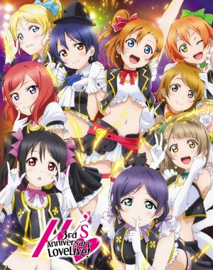

Love Live! School Idol Festival is a game from the anime "Love Live! School Idol Project!" and "Love live! Sunshine!". The game features all 18 of the school idol girls from the µ's (Pronouced "Muse") and Aqours.
|  | Idols from µ's:
|
Idols from Aqours:
|
This game is basically a rhythm game with School Idols,the µ's and Aqours have their own song you can play.
These are Love Gems. They're used for "Honor scouting" which basically means that you can get cards from the girls in the idol groups instead of just some filler cards. But Love Gems are over priced 40 dollars for 50 of them which is one scout kek n o. |
|
These are Blue Scouting tickets. You get them if you've scouted 10 times in the Honor students area. You can use these scouting tickets for supporting members, or you can use them to get SR/UR, SSR/UR, or UR scouting. 5 for SR 80% UR 20%, 10 for SSr 80% UR 20%, and 25 for guarantee UR. | |
Green scouting tickets are used for a free single scout in the Honor scouting. |
| Person | Idol group |
|---|---|
| Eli Ayase | µ's |
| Nozomi Tojo | µ's |
| Maki Nishikino | µ's |
| Nico Yazawa | µ's |
| Dia Kurosawa | Aqours |